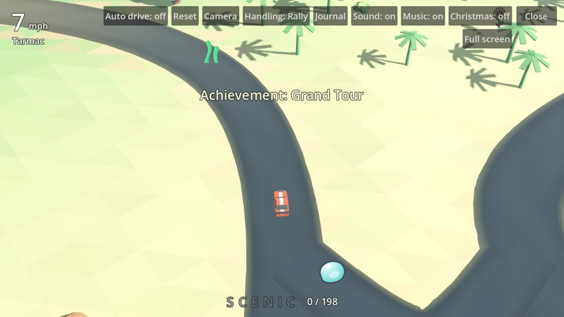
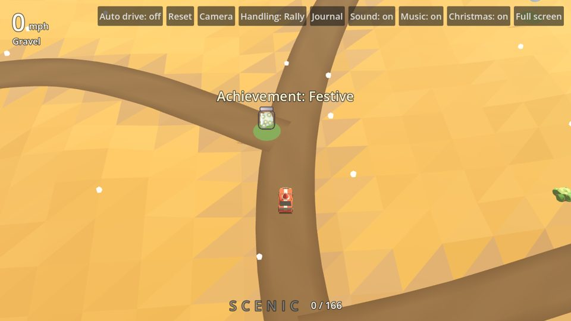
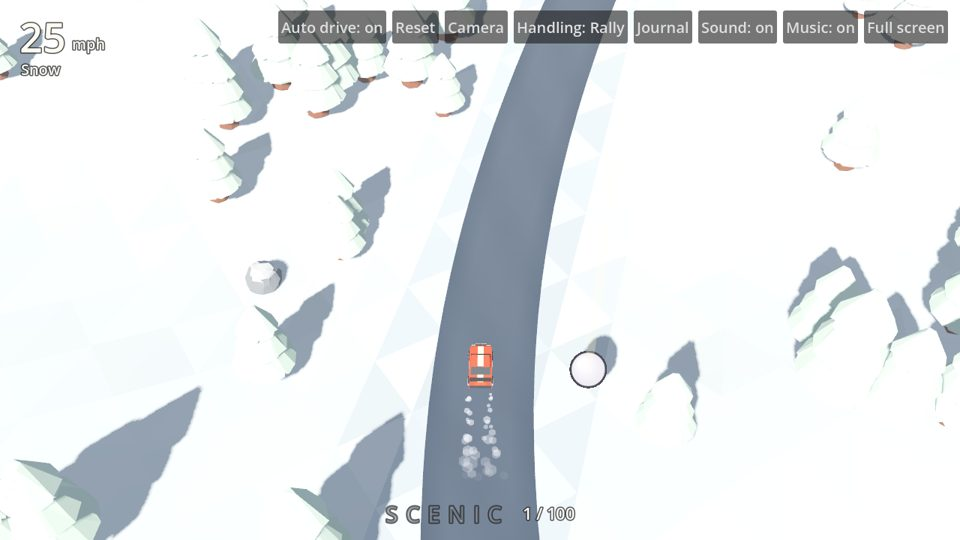

The Scenic Route
A calm rally drive
Drive a little rally car through pine lakes, golden hills, a snowy pass, a red desert and autumn woods. No opponents. No damage. No way to lose. Find 166 things, hit the ramps and time a lap if you feel like it.
Version 0.4.0 test build. New: Autumn Woods, broken bridges to jump, 15 achievements and a Christmas theme you can switch on. Release notes · Backlog · Source on GitHub



What kind of game is this?
No opponents. Lap circuits are there if you want them. The only time to beat is your own.
No way to lose. No damage, no fuel, no countdowns.
The drive is the reward. Five biomes, each with its own road, look and song.
Always a way back. Reset puts you on the nearest road with no penalty.
Things to do
- Follow the roads through all five biomes, or leave them and roam.
- Find 160 keepsakes and the letters S-C-E-N-I-C. A soft glow on the ground marks them.
- Hit the wooden ramps beside the road and beat your longest jump.
- Drive through a red and cream gate to time a lap on a circuit.
- Cross the bridges and knock over the cones at the road works.
- Jump the broken bridges and earn 15 achievements.
- Switch on the Christmas theme for snowfall and a hat on the car.
- Turn on auto drive and only steer.
- Pick a handling style: Easy, Rally or Loose.
- Check your journal to see what is left.
Controls
- Keyboard: arrows or WASD, Space drift, R reset, C camera, H handling, G auto drive, J journal, M music.
- Controller: left stick, RT gas, LT brake, A drift, Y reset, X camera, B auto drive.
- Touch: drag on the left half to steer. Buttons on the right.
Install on Android
- Tap Download for Android.
- Open the downloaded file.
- If Android asks, allow installs from this source.
- Tap Install, then open the game.
Android may show a Play Protect notice for apps from outside the Play Store.
Feedback wanted
- How the car feels on each surface
- Whether the camera sits at the right distance
- Any spot where you got stuck
- Your phone model if you see lag